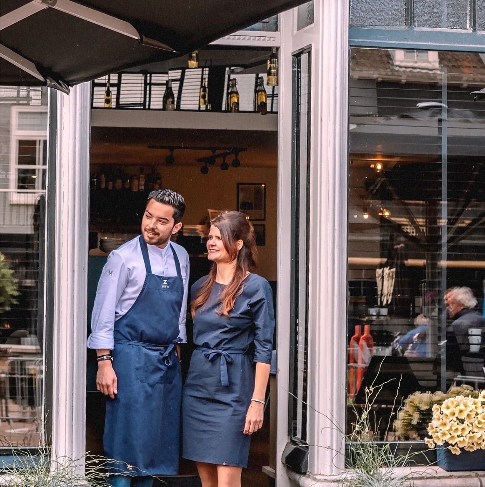
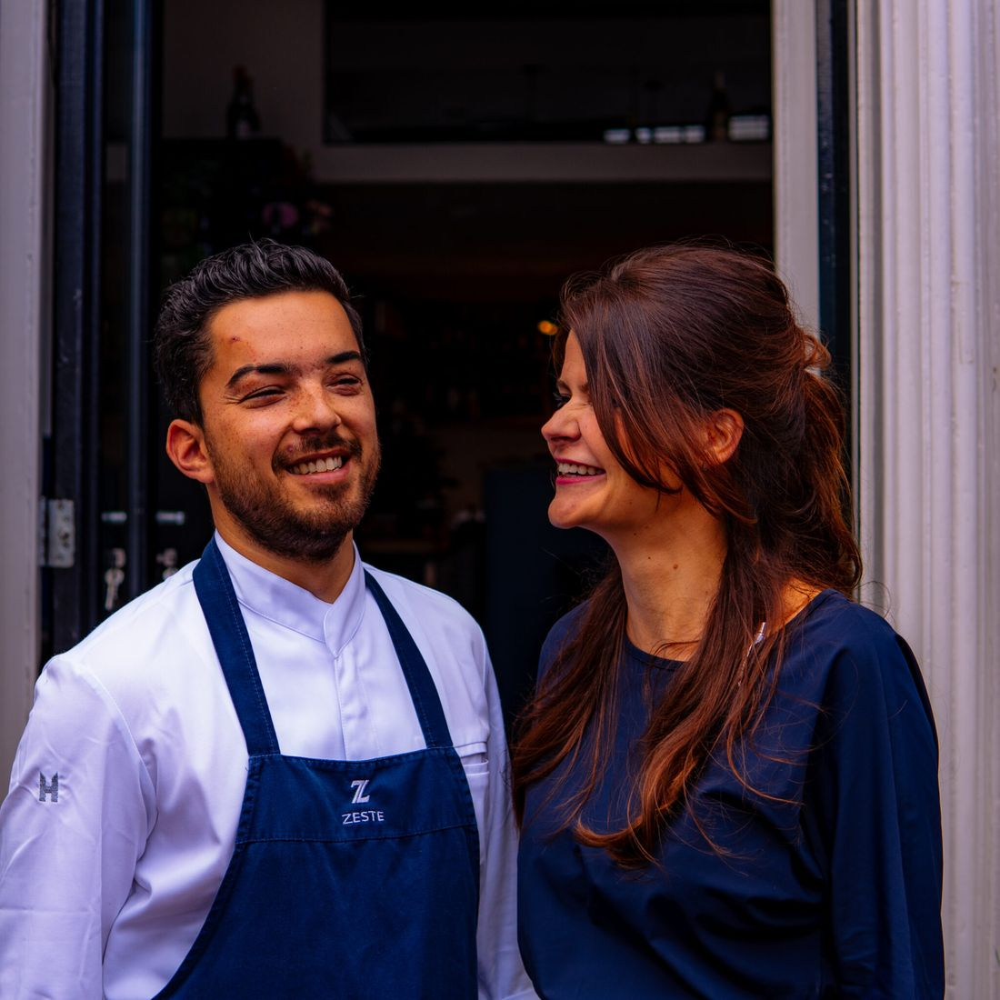
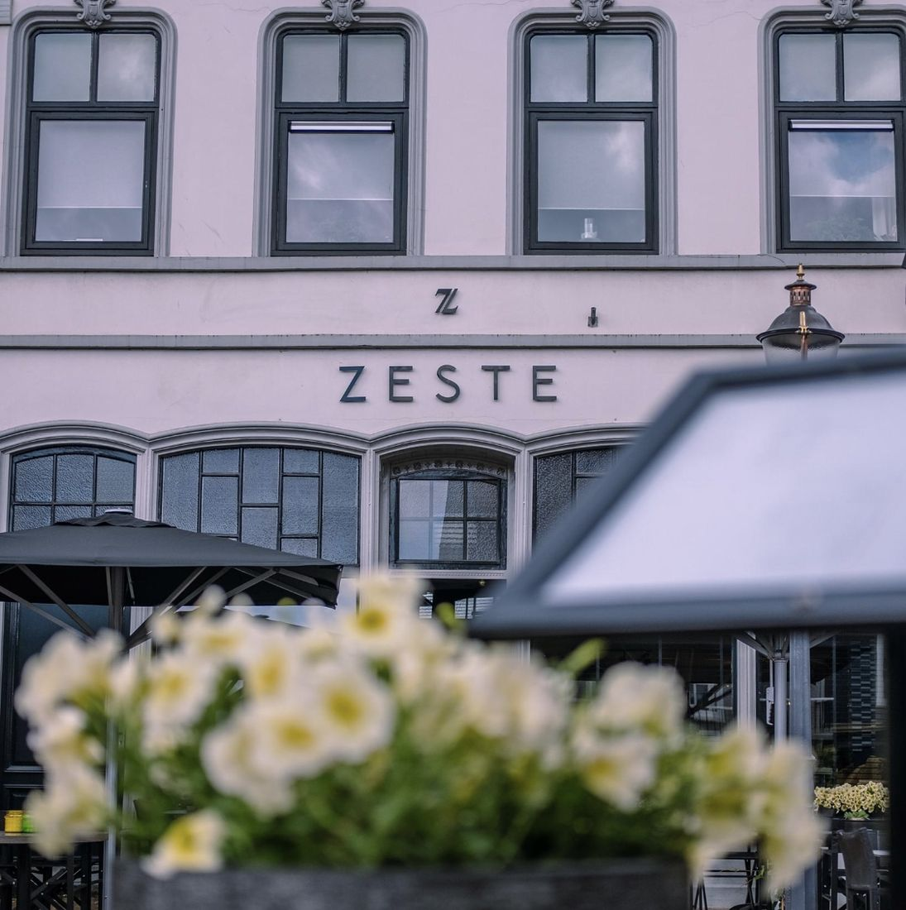
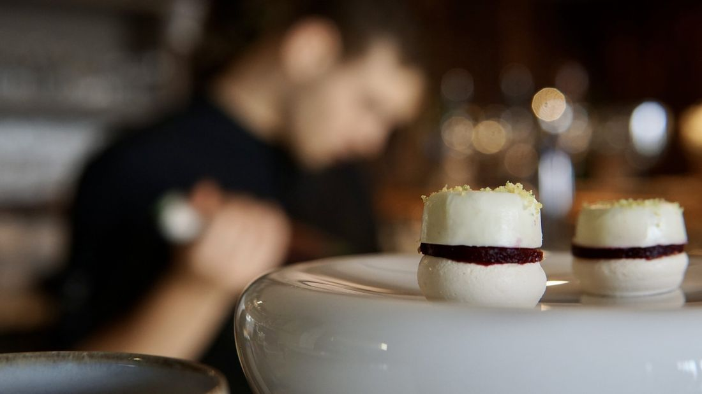
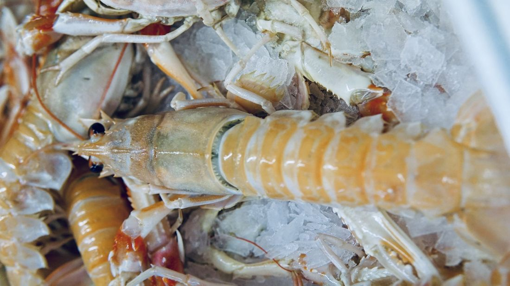
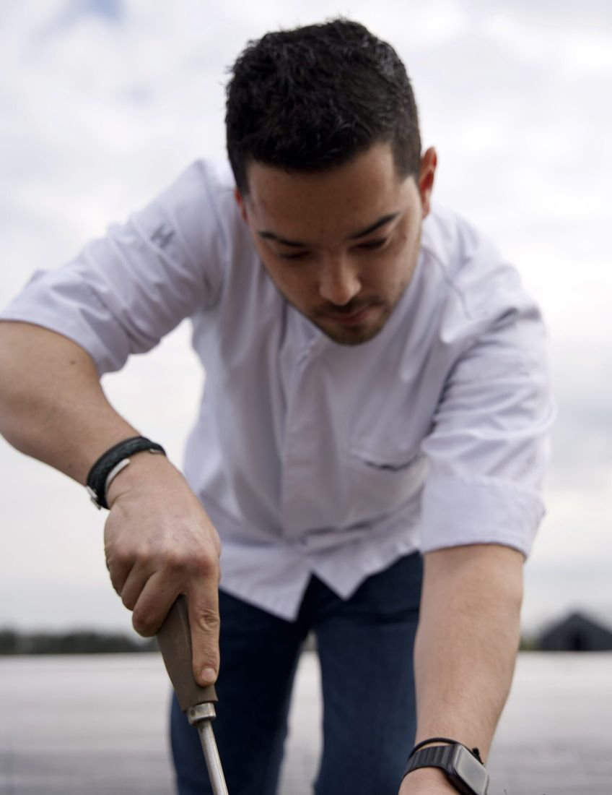

Smaken die raken
Huiskamerrestaurant aan de Markt in Zevenbergen. Indonesische roots, de Franse keuken als basis, en bij elk gerecht de wijn die erbij hoort.
"Waar liefde de tafel dekt, smaakt eten het best."Randy en Marisca Dieterman
Special diners
Naast de vaste kaart koken we regelmatig een themamenu. Alleen op reservering, in intieme setting.
Wild menu vol
4 gangen · € 65
Indonesisch menu
4 gangen · € 65
Chateaubriand menu
3 gangen · € 65
Wild menu
4 gangen · € 65
Seafood diner
4 gangen · € 65
Truffeldiner
4 gangen · € 79
Wijnproeverij, elke laatste zondag van de maand
Van 12.00 tot ongeveer 15.30 uur. Tien wijnen met vijf gerechtjes van chef Randy, met uitleg van onze sommeliers. € 75 per persoon.

Twee harten, één droom
"Zeste is een flintertje citrusschil, bomvol smaak. Klein en bijna onzichtbaar, maar precies dát maakt het verschil."
Chef-kok Randy Dieterman kookt nieuwsgierig en avontuurlijk: Indonesische roots, met de Franse keuken als basis. Van Curaçao tot Zwitserland, van Noordwijk tot Breda, iedere plek schreef mee aan zijn signatuur.
Marisca Dieterman, maître en sommelier, leest wijnen als romans. Persoonlijk en met oog voor detail. Samen met ons team schenken, koken en vertellen we over de smaken in het glas en op uw bord.
Feestdagen bij ZESTE
Op Kerstavond, Eerste en Tweede Kerstdag zijn we open voor diner. Liever thuis? Dan nemen wij het werk uit handen.
Kerstmenu voor thuis
Opwarmen, dresseren, genieten. Met wijnadvies per gang van onze sommeliers.
Bestellen →Luxe gourmet
Vlees en vis van restaurantkwaliteit, verse garnituren en huisgemaakte sauzen.
Bestellen →Een kijkje bij ZESTE




Reserveren
Met ongeveer 28 plaatsen is reserveren op voorhand gewenst. Zeker in het weekend en bij de special diners.
Schuif aan
Reserveer online, of bel ons gerust. Dieetwensen of allergieën? Laat het ons vooraf weten.
Openingstijden
31 december is het restaurant gesloten. Wijnproeverijen op de laatste zondag van de maand vanaf 12.00 uur.
Om de hoek zit ook boemboe. traiteur: van donderdag tot zondag ZESTE-gerechten om af te halen.